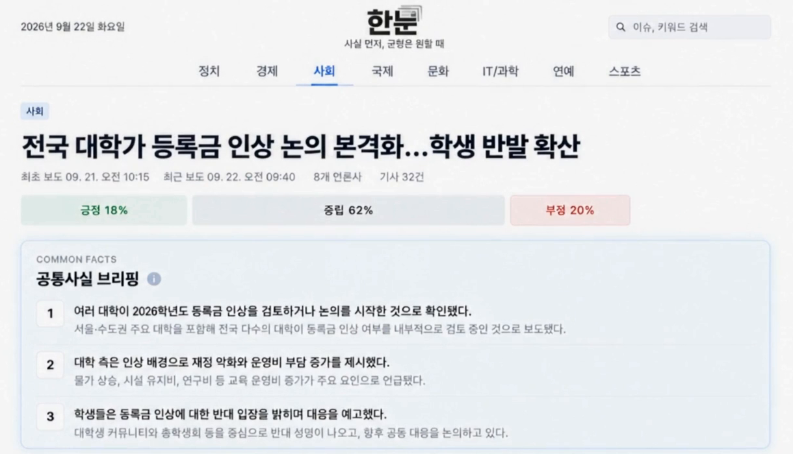

같은 사건 뉴스를 관점별로 나눠 보는 서비스

6년치 과거 기사 적재
Spark 쓰기 커밋
Iceberg 전환 뒤 분석팀 입력 추출
제가 맡은 일
- 언론사 13곳 수집부터 Kafka, HDFS 3개 층, MySQL 적재까지 전 구간. 분석 모델과 화면은 팀원 담당
- 분석팀과 백엔드가 받는 기사 스키마와 JSON 계약을 먼저 정해, 분석팀은 코드를 고치지 않고 데이터를 받음
- EC2 1대에 컨테이너 4개로 운영하며 Airflow가 15분마다 수집과 적재 실행
트러블슈팅
1시간 만에 멈춘 1,110만 건 적재1,110만 건 적재
왜 터졌나
원본에 날짜 형식이 3가지 섞여 있었습니다. 한글 12시간제 약 18만 건, 점 구분 약 32만 건. Spark의 파이썬 변환 함수는 예외 하나가 잡 전체를 멈춥니다.
왜 이렇게 고쳤나
300만 행에 하나꼴인 값은 표본으로 못 잡아서 7개 파일을 전부 셌습니다. 못 읽는 행은 그 행만 빼고 건수를 남겨, 빠진 양을 말할 수 있게 했습니다.
파일 54만 개로 쪼개져 쓰기 한 번에 30분30분 → 6초
왜 터졌나
중복 제거는 기사 ID로 200조각, 저장은 날짜별이었습니다. 조각마다 날짜 파일을 따로 써서 파일 수가 곱셈으로 늘었습니다.
왜 이렇게 고쳤나
파일 수가 조각 수와 날짜 수의 곱이라, 쓰기 직전 repartition("dt")로 날짜 기준으로 다시 묶었습니다. 1,110만 건이 같은지 맞춘 뒤에 교체했습니다.
화면에 빈칸으로 나갈 뻔한 분석 결과 절반47.8% → 97.2%
왜 터졌나
분석팀은 며칠 단위 창을 매일 다시 계산하며 이슈 번호를 새로 매깁니다. 번호만 보고 최신본을 고르다 서로 다른 날의 창이 섞였습니다.
왜 이렇게 고쳤나
번호는 창 안에서만 뜻이 있어서 창 하나를 통째로 붙였습니다. 없는 창이면 빈 결과로 덮지 않고 멈추게 했습니다. 덮으면 이미 나간 이슈가 화면에서 사라집니다.
서비스를 멈추지 않고 바꾼 저장 형식46.6초 → 20.1초
왜 바꿨나
15분마다 폴더 2,814개의 수정 시각을 하나씩 훑어 분석팀 입력을 만들고 있었습니다. 테이블이 자기 파일 목록을 들고 있는 형식이 필요했습니다.
왜 이 순서였나
옆에 새로 짓고, 양쪽에 쓰고, 두 번 세고, 읽기를 옮겼습니다. 한 번에 바꾸면 중간에 되돌릴 수 없어서입니다. 사흘 뒤에도 11,153,241건이 양쪽에서 같았습니다.
스스로 뒤집은 "48시간이면 충분하다"결론 철회
왜 틀렸나
검증 데이터를 38시간 동안만 모았으니 38시간보다 긴 이슈는 애초에 보일 수 없었습니다. 실제로 한 이슈는 6일 넘게 기사가 이어졌습니다.
그래서 어떻게 바꿨나
창을 이슈를 자르는 기준이 아니라 다시 계산할 범위로 두고, 창을 넘는 이슈는 ID를 이어받게 했습니다.
기술을 고른 이유
- Kafka 크롤러와 Spark를 떼어 한쪽이 멈춰도 기사가 남게. 이미 파일인 과거 기사는 Kafka를 거치지 않고 HDFS로 바로 적재
- PySpark Kafka 읽기와 HDFS 쓰기를 기본 지원해 1,110만 건 백필과 15분 적재를 한 도구로
- HDFS, Iceberg 원본은 그대로 HDFS 브론즈에, 실버는 파일 목록을 바로 아는 Iceberg로
- Airflow 상태와 재시도와 실행 이력이 남아서. 실제로 그 화면에서 15분 간격 실패를 보고 사고를 발견